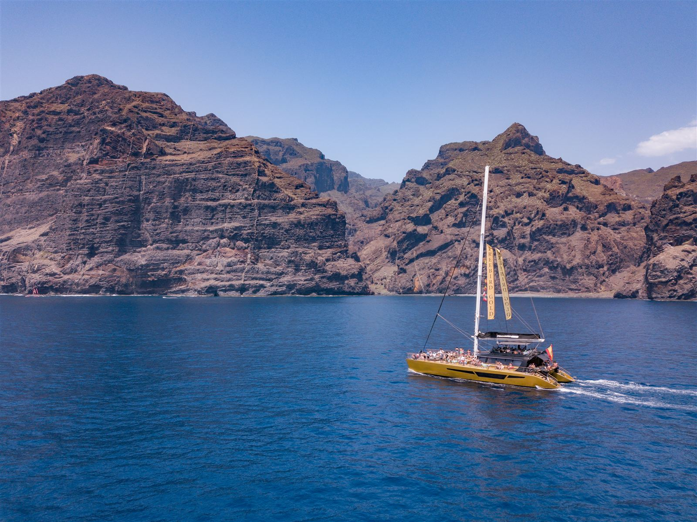
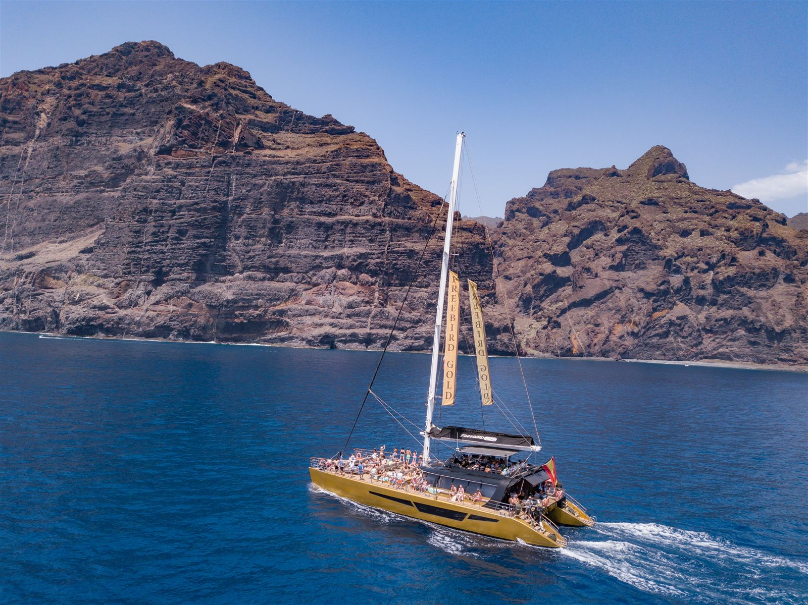
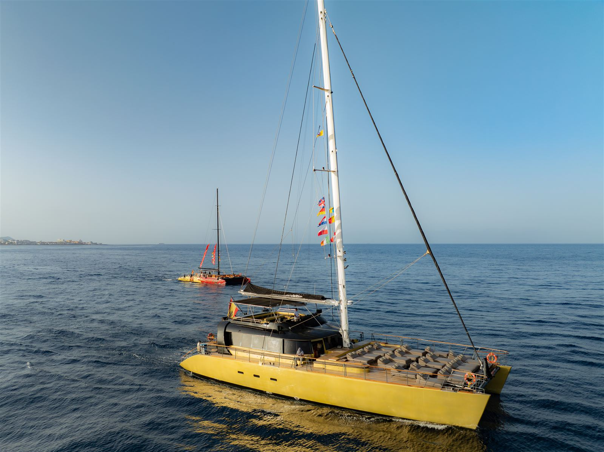
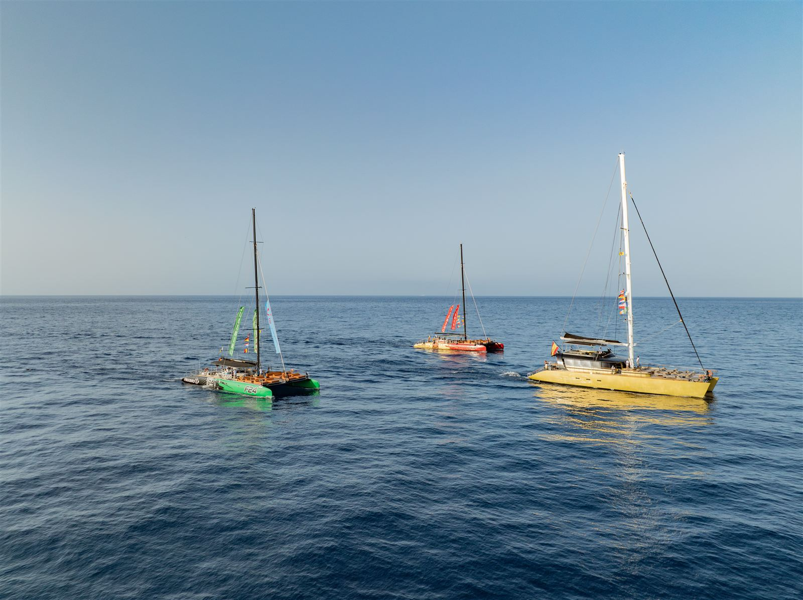
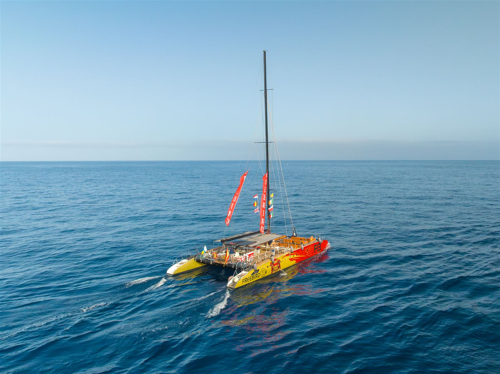
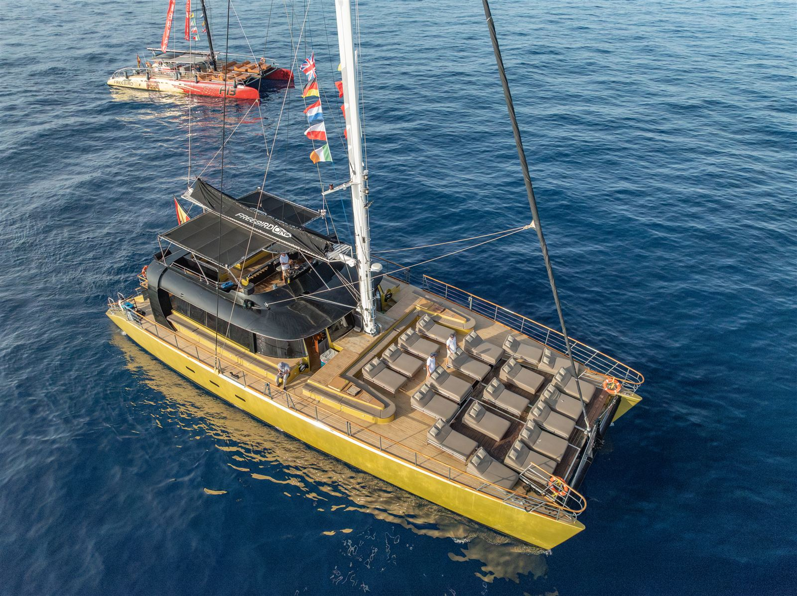
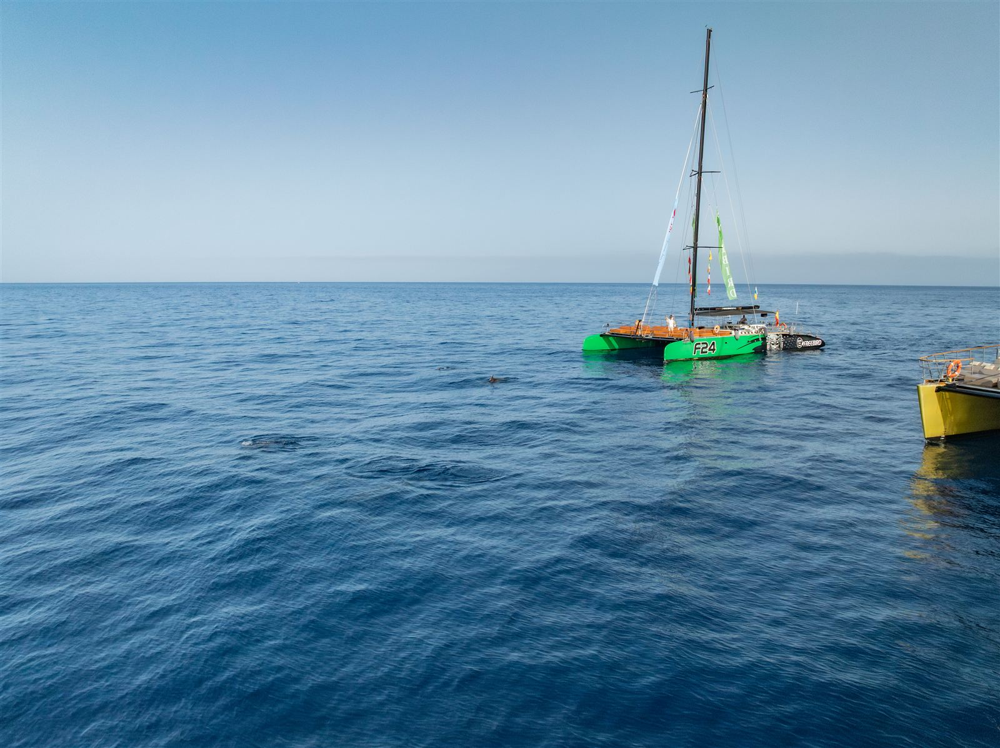
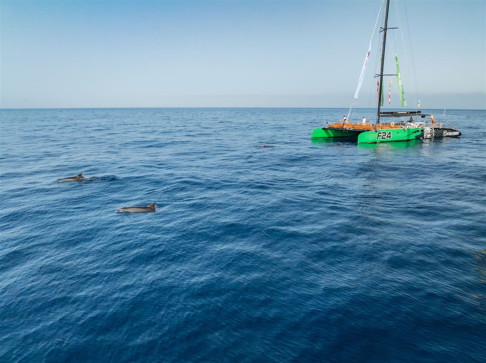
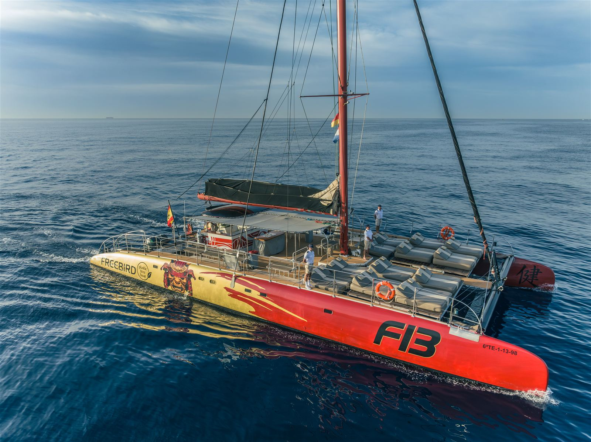
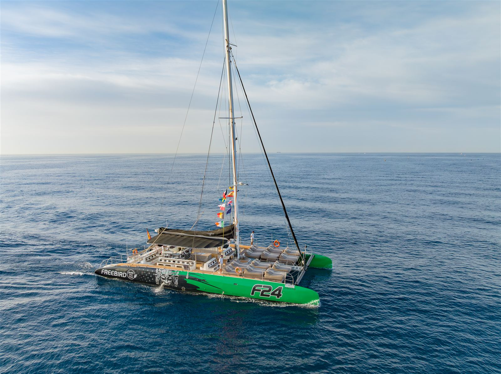
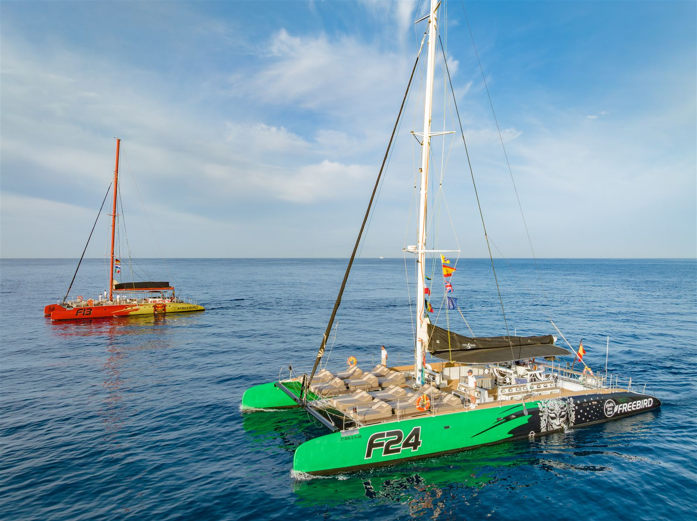
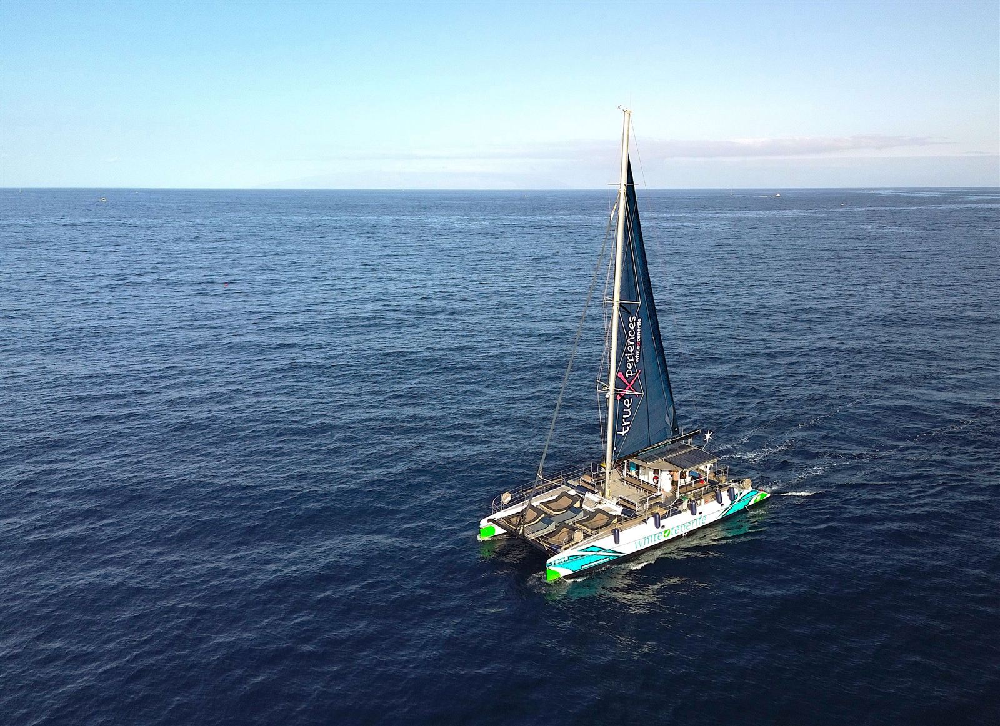
Imbarcati per un'esperienza indimenticabile a bordo di un catamarano di ultima generazione e scopri delfini e balene pilota in piena libertà, navigando lungo la costa sud di Tenerife — una delle zone con maggiore presenza di cetacei residenti d'Europa.
La navigazione si svolge in modo rispettoso e sostenibile, seguendo i protocolli ufficiali di osservazione, per goderti l'incontro con la fauna marina nel suo habitat naturale. Navigazione tranquilla e stabile, informazioni a bordo sulla fauna e la costa, tempo per rilassarsi e godersi il mare.
Catamarani ampi e confortevoli, con zone d'ombra e di sole, sedute comode e, su alcune imbarcazioni, reti tipo amaca per stare a pochi centimetri dall'acqua.
Transfer andata/ritorno dalle zone servite del sud, cibo e bevande a bordo, equipaggio professionale, carburante, assicurazione passeggeri e commento informativo.
Navigazione secondo i protocolli ufficiali, nel rispetto di balene e delfini, per osservarli senza interferire con il loro comportamento.
Famiglie, coppie, gruppi di amici e viaggiatori che vogliono un'esperienza autentica, rilassante e a contatto con la natura marina.
Zona d'imbarco nel sud di Tenerife (dettaglio indicato sul voucher). Pick-up disponibile da hotel e alloggi nelle zone servite. Si consiglia di presentarsi 15–20 minuti prima della partenza. Diverse opzioni di percorso, da uscite brevi a escursioni più complete.
Dimmi quando e quanti siete. Ti rispondo con orari, varianti e disponibilità.
💬 Contattaci su WhatsApp